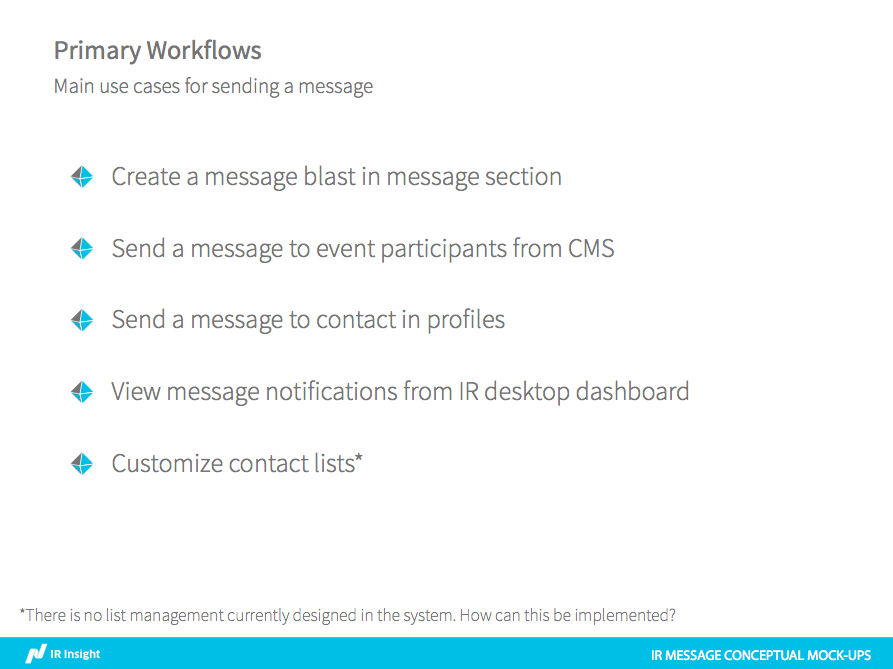
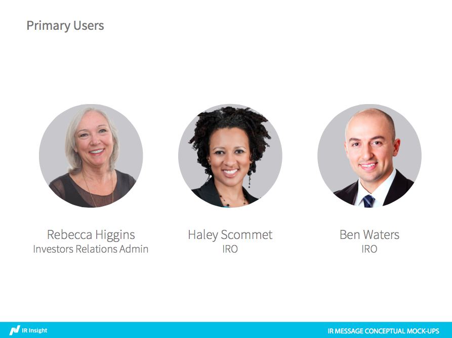
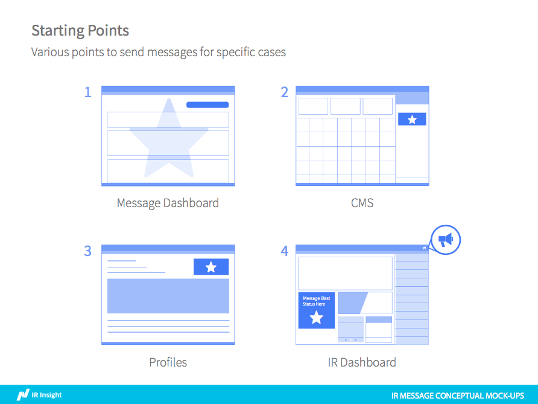
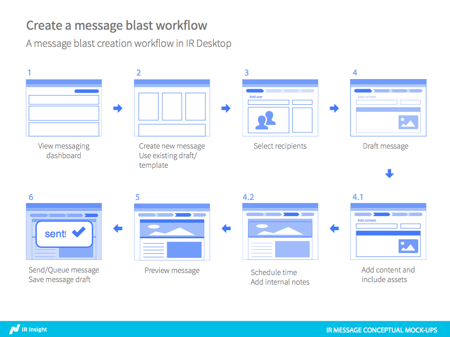
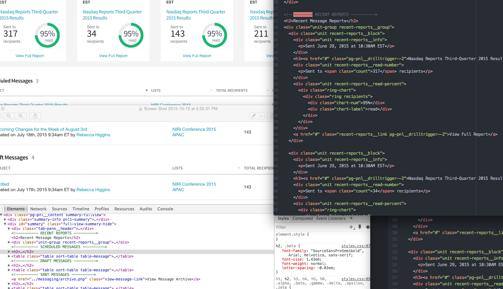
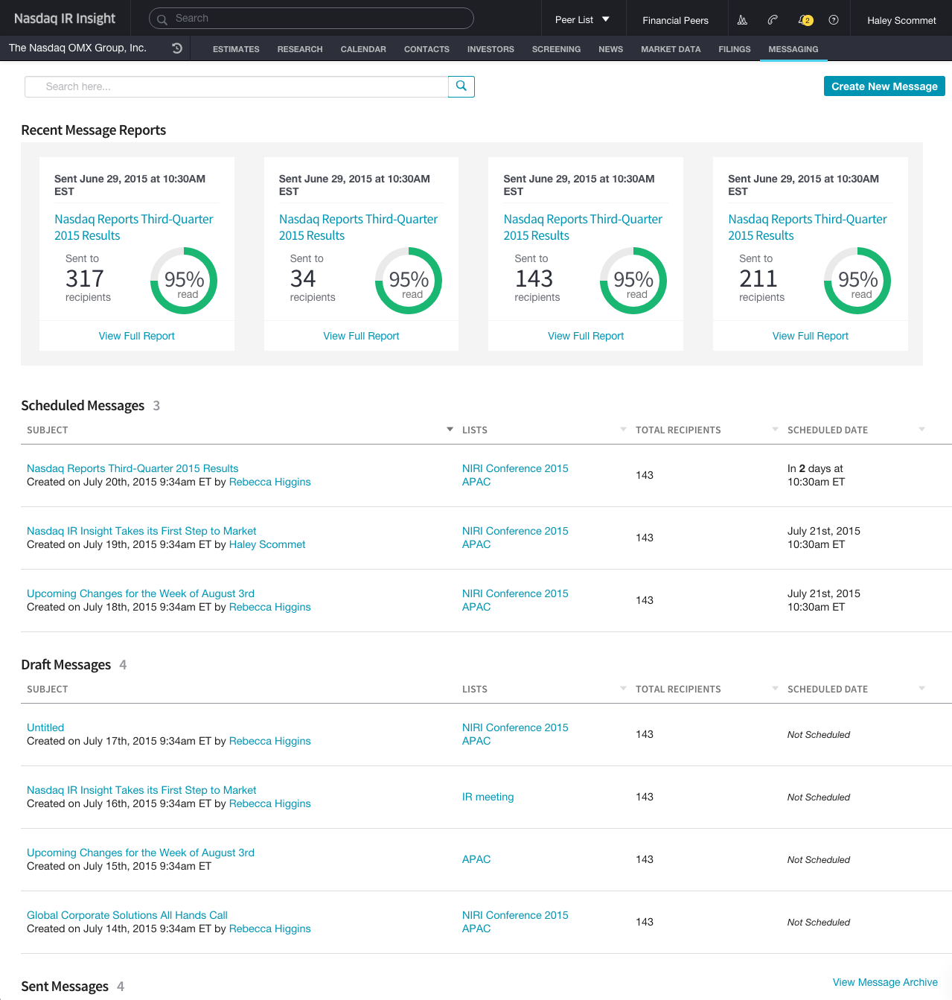
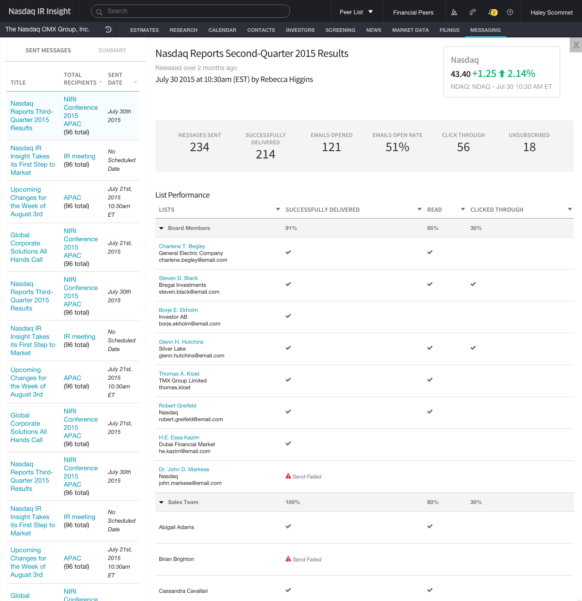
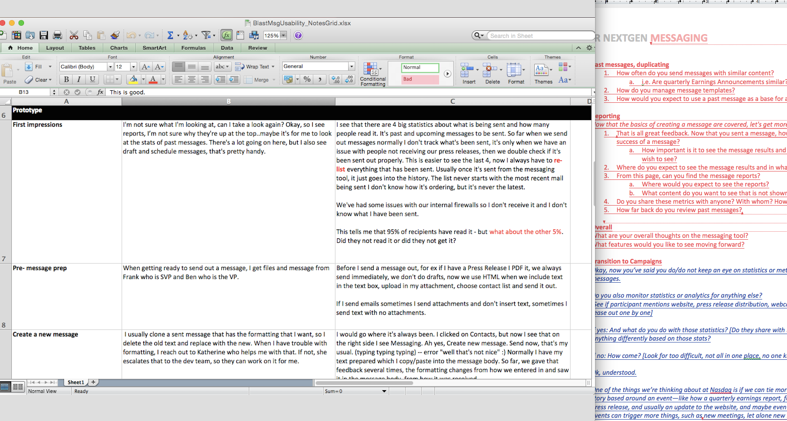

IR Insight Desktop
Interaction design | Front-end Code | User Research
Nasdaq IR Desktop is a ground-breaking platform built exclusively for the Investor Relations community. It monitors all components in a one intuitive, and customizable platform, access to premium content and news, gain unique insight into buy-side decision-making, leverage time-saving tools to monitor developments, prioritize outreach, and measure its impact, plan investor meetings, and analyze your peers.
Discovery
Initial Research Before designing and building the messaging section of IR Insight desktop product, I spent a week listening to user interviews conducted by the research lead and performed competitive research to see similar products in the market. I also looked into the original blast messaging workflow which showed a tedious process in the existing product. With my product manager, We went over user stories to refine them down to actionable goals that can produce a message section for our personas
 Designing Concepts After the initial research, I brainstormed for different launch points for messaging in various areas within the system. I worked with other product designers who were working on different parts of the system to collaborate on the secondary workflows.
 Build
Build, build, build With another product designer, we broke down to divide and conquer. We built out the messaging section in 3 weeks. I focused mainly on the main page of all mesages and reports. I worked with another product designer on the team to receive feedback on the presentation and content layout of the reports. Through iterations and refinements, we were able to move onto the next step of the process - usability testing.
  Refine
With two other product designers, we traveled up to Stamford Connecticut to conduct usability testing with one of our clients. In an hour session, we asked questions and received feedback on the design and interaction implementations. I was in charge of writing notes, uploading interview content, and writing a brief on the session. In the following 3 weeks, we conduct more interviews in North America and in Europe. After each research sessions, we went back to make changes based on the feedback we received such as button colors, content layout, and small interaction fixes.
